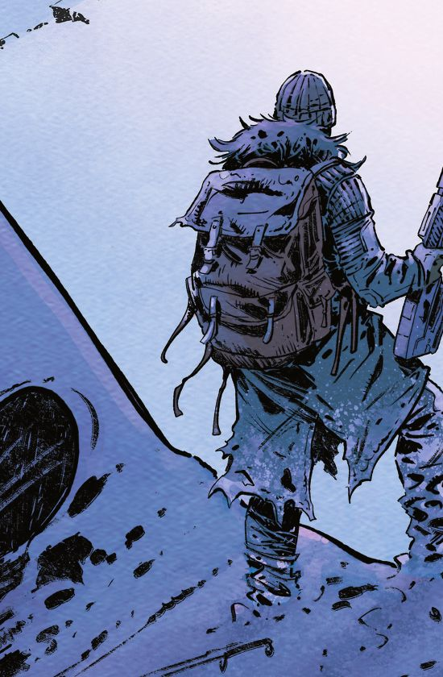
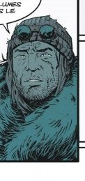

L'homme qui a tout perdu
Cooper
Un homme issu d'une humanité désormais décimée. Un loup solitaire, dont le seul véritable ami est Tiny, un bœuf musqué. Derrière l'homme d'action, un homme blessé, qui a perdu tous ceux qu'il aimait — et qui lit encore les grands classiques de la littérature en mémoire de sa femme.
- Compagnon
- Tiny, bœuf musqué
- Devise
- Ne s'occuper que de soi-même… en théorie.
- Faille
- Son humanité est toujours là.
« Cooper est un homme d'action, un loup solitaire. […] C'est un homme blessé, mais son humanité est toujours là. Et quand il rencontre quelqu'un qui mérite d'être sauvé, il est prêt à tout pour le sauver. »